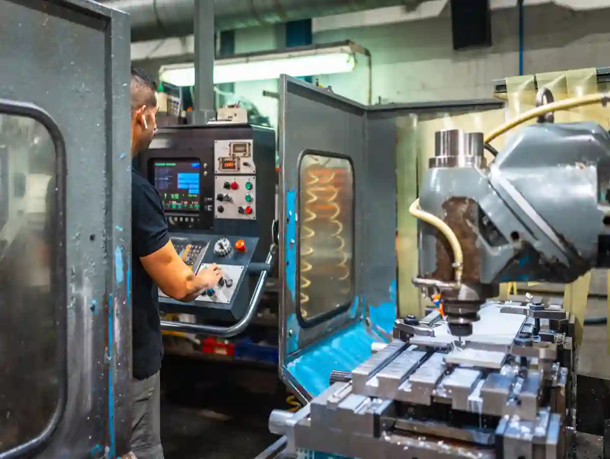
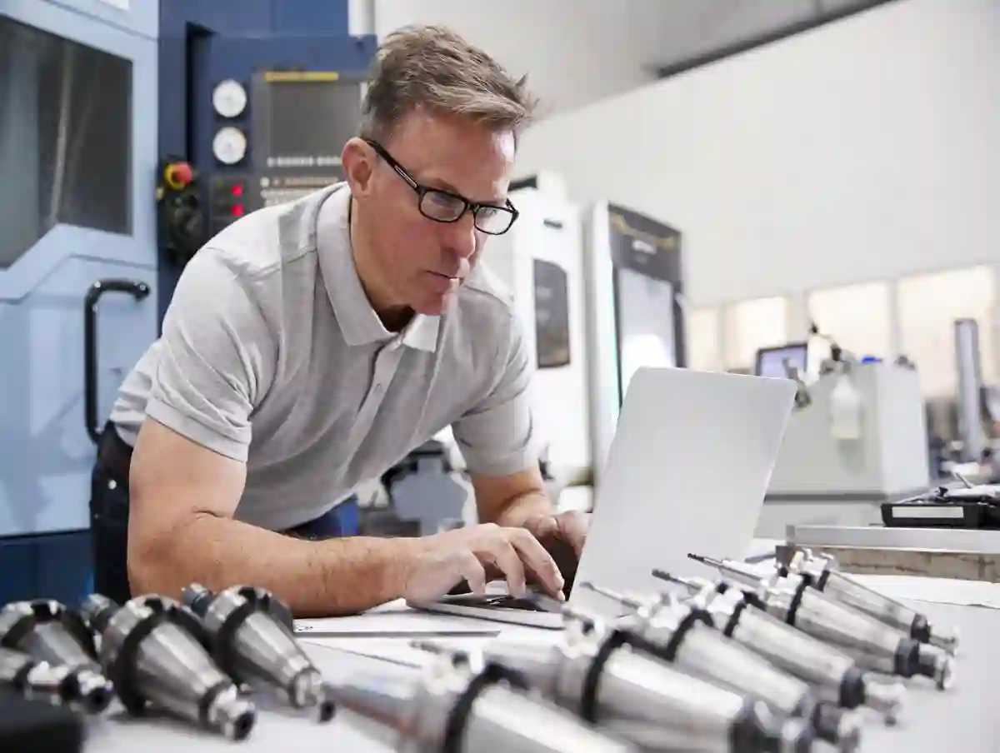
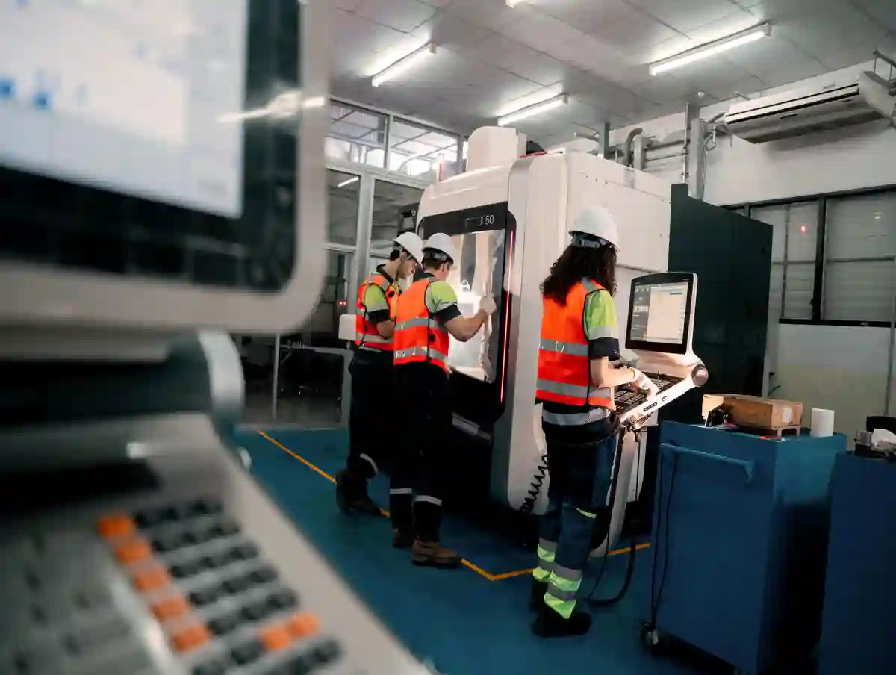
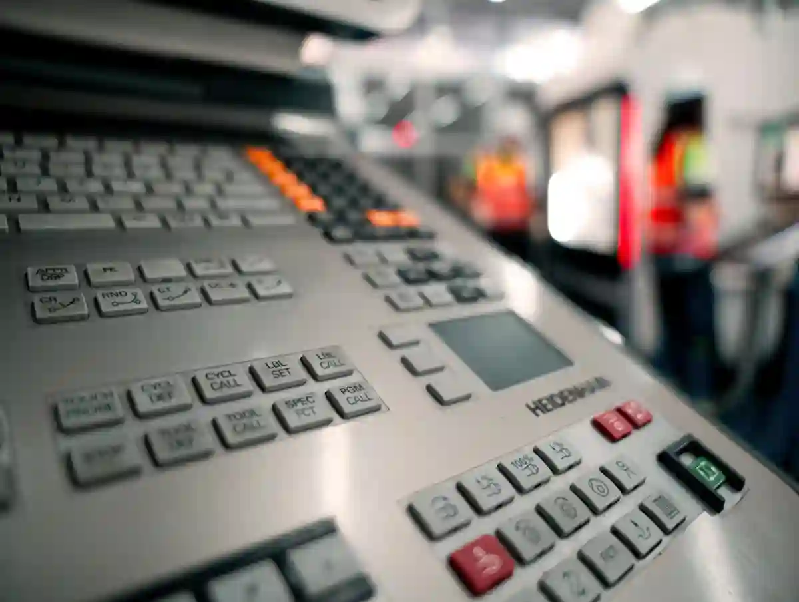

Uzun Vadeli Cnc Tedarikçi Yönetimi Nasıl Yapılır?
Uzun vadeli cnc tedarikçi yönetimi, “parça ürettirme” işini; kalite, termin ve maliyet çıktıları ölçülen bir sistem haline getirmektir. Başarılı model; tedarikçi segmentasyonu, net teknik şartname, KPI’larla izlenen performans, revizyon–değişiklik kontrolü ve sürekli iyileştirme döngüsü üzerine kurulur. Bu sayede tedarikçi, sadece kapasite sağlayan bir atölye değil; ürününüzün sürekliliğini koruyan bir üretim ortağına dönüşür.
Bu rehber, satın alma ve kalite perspektifini birleştiren CNC İmalat Rehberi içeriğinin “uzun vadeli yönetim” devamıdır.
Cnc Tedarikçi Yönetimi Neden “Seçim” Değil “Sistem”dir?
Uzun vadede başarı, tedarikçiyi seçmekten çok süreci yönetmektir. cnc tedarikçi yönetimi; teknik paket, ölçüm dili, KPI ve revizyon kontrolünü standardize ederek kişiye bağlılığı azaltır. Böylece kalite ve termin dalgalanmaları görünür olur, aksiyonlar veriye dayanır, fiyat tartışması yerine toplam maliyet ve risk yönetimi yapılır, karar hızlanır. Operasyonlar daha öngörülebilir olur, denetim kolaylaşır.
Uzun vadede asıl risk: belirsizlik
Birçok satın alma ekibi tedarikçi yönetimini “doğru firmayı buldum, bitti” gibi görür. Oysa CNC projelerinde risk, ilk üretimde değil; 2., 5. ve 20. partide ortaya çıkar. Çünkü takım aşınması, operatör değişimi, malzeme lot farkı, fikstür yorgunluğu ve planlama yoğunluğu; aynı parçayı zaman içinde farklı sonuca götürebilir. Bu yüzden cnc tedarikçi yönetimi, tekrarlanabilirliği garanti altına alan bir kontrol mimarisi kurar.
Termin–kalite–maliyet üçgeni (çatışma değil dengeleme)
CNC üretimde “en hızlı” çoğu zaman “en pahalı”, “en ucuz” çoğu zaman “en riskli” olabilir. Uzun vadeli yaklaşım, üçlü hedefi aynı anda zorlamaz; kritik parçalarda kalite ve termin, standart parçalarda maliyet optimizasyonu önceliklenir. Burada amaç; fiyat pazarlığı değil, toplam sahip olma maliyetini (rework, hurda, gecikme, acil lojistik) düşürmektir.
“Ölçmediğin şeyi yönetemezsin”
Tedarikçiyle ilişki uzadıkça kişisel iletişim güçlenir; ancak kişisel güven, sayısal güvence değildir. Bu noktada cnc üretici performans ölçümü devreye girer: teslimat performansı, kalite metrikleri (PPM, iade, yeniden işleme), teknik iletişim hızı, revizyon yönetimi başarımı gibi göstergeler düzenli izlenir. KPI yaklaşımı, ilişkiyi “duygusal” değil “operasyonel” zemine taşır.
Segmentasyon: Her Tedarikçi Aynı Yönetilmez
Segmentasyon, kaynakları doğru yere odaklar. Parçaları kritik A, orta B, standart C diye ayırın; tedarikçileri de teknoloji, ölçüm ve kapasite yetkinliğine göre sınıflayın. stratejik cnc satın alma bu sayede netleşir: kritik parçada derin işbirliği, standart parçada alternatifli rekabet kurulur, risk dengelenir. Bu ayrım, denetim sıklığını ve geliştirme bütçesini de doğru dağıtır.
Parça kritikliğine göre segment
Uzun vadeli tedarikçi kalite yönetimi için ilk adım; parçaları 3 gruba ayırmaktır:
- A Sınıfı (kritik): Fonksiyonel yüzey, sızdırmazlık, güvenlik, mikron tolerans
- B Sınıfı (orta): Montaj uyumu önemli, tolerans orta, üretim adedi değişken
- C Sınıfı (standart): Tolerans geniş, risk düşük, maliyet hassas
A sınıfı parçalar için tedarikçi sayısını azaltıp derinleşmek; C sınıfında ise alternatifli çalışmak daha sağlıklıdır. Bu segmentasyon, stratejik cnc satın alma kararlarını netleştirir.
Tedarikçi tipine göre segment
CNC tedarikçileri genelde şu profillere ayrılır: seri üretim odaklı, proje bazlı/özel parça odaklı, karma (hybrid). Özel parça projelerinde, yalnızca makine listesi değil; proses planlama ve ölçüm altyapısı belirleyicidir. AYMAKSAN’ın yaklaşımı da benzer: makine parkının çeşitliliği kadar, disiplinler arası entegrasyon ve ölçüm süreçlerinin üretime gömülü olması öne çıkar. Makine Parkı sayfasındaki yapı bu bakışla okunmalıdır.
Uzun Vadeli Cnc İmalat Tedarikçi İlişkisi İçin Başlangıç Paketi
İlk teklif paketi eksiksiz değilse ilişki varsayımla başlar. Güncel CAD, revizyon kodu, malzeme standardı, kritik ölçüler, yüzey şartı ve raporlanacak ölçüler açık yazılmalıdır. Böylece cnc imalat tedarikçi ilişkisi teknik zemine oturur, fiyat/termin sapmaları azalır, ilk numune onayı hızlanır, güven oluşur. İlk partide FAI planı ve örnek rapor formatını mutlaka paylaşın.
1) Teknik veri seti (RFQ öncesi)
İyi başlayan ilişki, teknik seti “tam” olan teklifle başlar. Bir RFQ paketinde şu 6 unsur eksiksiz olmalıdır:
- Güncel CAD + teknik resim (revizyon kodu belirgin)
- Malzeme standardı ve sertifika beklentisi
- Tolerans stratejisi (kritik ölçüler işaretli)
- Yüzey şartı (Ra/kaplama/ısıl işlem)
- Ölçüm raporu beklentisi (hangi ölçüler raporlanacak?)
- Kabul kriteri ve numune planı
Bu paket net değilse, tedarikçi fiyatı “varsayım”la verir. Varsayım ise uzun vadede ihtilaf üretir.
2) Ölçüm ve doğrulama dili
CNC’de anlaşmazlıkların çoğu “ölçüm yöntemi” kaynaklıdır. Teknik resimde yüzey ve ölçülendirme işaretlerinin standarda uygun verilmesi, tedarikçiyle aynı dili konuşmanızı sağlar. Bu konuda MEB’in teknik modülleri iyi bir referans çerçevesi sunar: Ölçülendirme ve Yüzey İşlemleri (MEB).
KPI Tasarımı: Cnc Üretici Performans Ölçümü Nasıl Kurulur?
KPI’lar az ama etkili olmalı: OTIF/OTD, PPM, yeniden işleme oranı, mühendislik yanıt süresi ve dokümantasyon uyumu. Hedefleri parça sınıfına göre belirleyin, aylık trend izleyin. Bu yapı cnc üretici performans ölçümü için tek pano yaratır; sorunlar erken görünür, kök neden aksiyonu hızlanır. Hedef sapınca sorumluyu değil, süreci düzeltmeyi amaçlayın her zaman.
4 ana KPI başlığı
Uzun vadeli cnc tedarikçi yönetimi için KPI’ları az ama etkili kurmak gerekir. Aksi halde ölçüm boğar, karar gecikir.
- Termin Güvenilirliği
- OTD (On-Time Delivery) / OTIF (On-Time In-Full)
- Planlanan termin sapması (gün)
Teslimat KPI’ları, üretim akışını korumak için temel göstergelerdir.
- Kalite Performansı
- PPM (milyonda hata) veya red oranı
- Yeniden işleme oranı
- Ölçüm raporu tutarlılığı (eksiksiz/eksik)
- Mühendislik Tepki Hızı
- RFQ dönüş süresi
- Revizyon sonrası fiyat/termin güncelleme süresi
- DFM geri bildirimi kalitesi (somut öneri var mı?)
- Süreç Disiplini ve Dokümantasyon
- Revizyon kontrol uyumu
- Malzeme sertifika/lot izlenebilirliği
- Proses değişikliği bildirim disiplini
Bu KPI seti, tedarikçi kalite yönetimi ile termin yönetimini aynı panoda birleştirir.

KPI hedeflerini “parça sınıfına” göre ayarlayın
A sınıfı parçada OTD %95 hedeflenirken, kalite tarafında PPM daha sıkı tutulur. C sınıfında ise maliyet ve teslimat daha baskın olabilir. KPI hedeflerini segmentasyona bağlamak, stratejik cnc satın alma yaklaşımının pratik karşılığıdır.
Puan Kartı ve Aksiyon Mekanizması (Sadece ölçmek yetmez)
Puan kartı rapor değil tetikleyicidir. Kalite %40, termin %30, iletişim %20, dokümantasyon %10 gibi ağırlık verin. Skor sarıya düşerse 8D/A3 başlatın, kırmızıda yeni işi dondurun ve ikinci kaynak devreye alın. Bu disiplin cnc tedarikçi yönetimi kararlarını şeffaflaştırır, pazarlığı azaltır. Aksiyon sahibi, kapanış tarihi ve kanıt belgesi olmadan madde kapanmış sayılmaz.
Skor kartı: ağırlıklandırma mantığı
Örnek ağırlık seti:
- Kalite: %40
- Termin: %30
- Mühendislik/iletişim: %20
- Dokümantasyon: %10
Önemli olan yüzdeler değil; skor düştüğünde ne olacağıdır. Skor kartı “rapor” olarak kalırsa, ilişkiyi iyileştirmez.
3 seviyeli aksiyon planı
- Yeşil (80–100): Standart izleme, iyileştirme önerisi topla
- Sarı (60–79): Kök neden + düzeltici faaliyet (8D / A3)
- Kırmızı (<60): Yeni iş dondurma, ikinci kaynak devreye alma, proses denetimi
Bu disiplin, fason imalat uzun vadeli çalışma modelinde “sürprizi” azaltır.
Kalite Yönetimi: Tedarikçi Kalite Yönetimi Sahada Nasıl Çalışır?
Sahada kalite, son kontrolde yakalanmaz; proses içinde yönetilir. Kritik ölçüler için ara kontrol frekansı, ölçüm fikstürü ve rapor formatı standardize edilir. Lot izlenebilirliği ve sertifika akışı netleşir. Böylece tedarikçi kalite yönetimi “hata bulma”dan “hata önleme”ye geçer; tekrar edilebilirlik artar, iade azalır. Kontrol planını resme değil, prosese bağlayın, güncelleyin düzenli.
Son kontrol değil, proses içi kontrol
Özellikle düşük toleranslı parçalarda “son kontrolde yakalarım” yaklaşımı pahalıdır. Doğru yöntem; kritik ölçülerin proses içinde kontrol edilmesi, ölçüm sonuçlarının tezgâh ayarlarına geri beslenmesidir. AYMAKSAN’ın kalite yaklaşımı bu hattı vurgular; ölçüm ve raporlama süreçleri özel parça projelerinde belirleyici olur: Kalite Kontrol ve Ölçüm.
Standardizasyon: ölçüm belirsizliği konuşulmalı
Aynı parçayı iki farklı kişi iki farklı şekilde ölçüyorsa, tartışma bitmez. Bu yüzden:
- Referans yüzeyler net olmalı
- Ölçüm fikstürü tanımlanmalı
- Ölçüm sırası ve ortam şartı belirlenmeli
CMM rapor formatı standardize edilmeli
Uzun Vadeli Çalışmada “Gizli” Performans Alanı: Revizyon ve Değişiklik Yönetimi
Revizyon yönetimi zayıfsa en iyi fiyat bile risk üretir. Dosya isimlendirme, eski revizyonu bloklama, fark listesini yazma ve ilk parça onayı şarttır. Proses/alt tedarikçi değişikliği için ön onay kuralı koyun. Bu sayede fason imalat uzun vadeli çalışma modelinde sürpriz azalır, tekrarlanabilir kalite korunur. Revizyon sonrası fiyat-termin güncellemesini aynı gün isteyin.
Revizyon kodu = kalite sigortası
CNC tedarikçiniz revizyon yönetimini iyi yapmıyorsa, en iyi makine parkı bile riski düşürmez. Revizyon yönetimi için minimum standart:
- Dosya isimlendirme (ParçaNo_RevX_Tarih)
- Eski revizyonun üretimden bloklanması
- Revizyon farklarının madde madde yazılması
- Revizyona özel ilk parça onayı (FAI)
Bu başlık, cnc imalat tedarikçi ilişkisinin sürdürülebilirliğini belirler.
Sözleşme Modeli: Uzun Vadeli Cnc Tedarikçi Yönetimi İçin Hangi Maddeler “Olmazsa Olmaz”?
Çerçeve sözleşme tek başına yetmez; teknik eklerle tamamlayın. Kabul kriteri, ölçüm raporu formatı, KPI hedefleri, proses değişikliği bildirimi ve revizyon akışı yazılı olmalı. Gizlilik ve veri paylaşımı da netleşsin. Böyle bir yapı cnc tedarikçi yönetimi için anlaşmazlıkları azaltır, hukuki değil operasyonel çözüm üretir. İhlal halinde yaptırım ve eskalasyon basamaklarını da yazın.
Çerçeve sözleşme + teknik ekler
Uzun vadeli çalışmada her siparişte yeniden pazarlık yapmak ilişkiyi yorar. En pratik model:
- Çerçeve sözleşme (genel şartlar)
- Teknik ek (parça sınıfı, kalite planı, ölçüm raporu formatı, kabul kriteri)
- SLA / KPI eki (OTD, kalite hedefi, raporlama periyodu)
- Değişiklik yönetimi eki (revizyon, proses değişimi, alt tedarikçi değişimi)
Bu yapı, fason imalat uzun vadeli çalışma kurgusunda netlik sağlar.

Proses değişikliği bildirimi (en çok ihmal edilen madde)
Kesici takım değişti, bağlama değişti, ısıl işlemci değişti… Tedarikçi bunu “iyileştirme” diye görür; siz sahada “uyumsuzluk” yaşarsınız. Sözleşmede şu ifade net olmalı: “Proses/alt tedarikçi değişiklikleri önceden yazılı onaya tabidir.” Bu madde, tekrarlanabilirlik için kritik bir güvence mekanizmasıdır.
İkinci Kaynak Stratejisi: Alternatif Tedarikçi “Tehdit” Değil Risk Sigortasıdır
Alternatif tedarikçi, ilişkiyi zayıflatmaz; sürekliliği güçlendirir. Kritik parçalarda kapasite dalgalanması, malzeme riski veya tek noktadan gecikme varsa dual-source kurun. İkinci kaynağı küçük adetlerle canlı tutun, eşdeğerlik testini yapın. Bu yaklaşım stratejik cnc satın alma açısından sigorta etkisi yaratır, kriz maliyetini düşürür. Acilde değil, sakin dönemde devreye almak her zaman daha güvenlidir.
Dual-source ne zaman gerekir?
A sınıfı parçalar için çoğu zaman tek kaynak (single-source) yönetilebilir; ancak şu durumlarda dual-source gerekir:
- Kapasite dalgalanması yüksekse
- Malzeme tedariki kırılgansa
- Parça, kritik projede tek noktadan gecikme yaratıyorsa
Dual-source kurarken en sık hata: ikinci kaynağı “son dakika” devreye almak. Doğru yaklaşım; ikinci kaynağı düşük adetlerle canlı tutmaktır.
“Eşdeğerlik” doğrulaması
İki tedarikçi aynı çizimi üretse bile, yüzey iz yönü, bağlama deformasyonu, ölçüm yöntemi farklı olabilir. Bu yüzden eşdeğerlik doğrulamasında:
- Kritik ölçülerde Cpk/Ppk yaklaşımı
- Yüzey pürüzlülüğü ve iz yönü
- Montaj denemesi ve saha simülasyonu
Bu başlık, tedarikçi kalite yönetimi disiplininin ileri seviye adımıdır.
Maliyet Yönetimi: Fiyat Pazarlığı Yerine “Maliyet Sürücüleri”ni Yönetin
Fiyatı düşürmek için önce maliyet sürücülerini görün: bağlama/fikstür, çevrim süresi, tolerans sıkılığı, ölçüm yükü, ikincil işlemler ve malzeme fire oranı. DFM ile toleransı fonksiyonla hizalayın, takım yolu iyileştirin. Böylece cnc imalat tedarikçi ilişkisi “pazarlık” yerine “mühendislik iyileştirmesi” üzerinden ilerler; toplam maliyet kalıcı azalır. Kazancı yıl sonu bazında ölçün, sapmayı görün.
CNC maliyet sürücüleri
CNC parça maliyetini genelde şu faktörler taşır:
- Bağlama ve fikstür karmaşıklığı
- İşleme süresi ve takım yolu
- Tolerans sıkılığı (ölçüm yükü)
- Malzeme israfı ve hazırlık operasyonları
- İkincil işlemler (kaplama, ısıl işlem)
Bu yüzden stratejik cnc satın alma, tedarikçiyi sıkıştırmak değil; maliyeti doğuran sürücüleri teknik olarak iyileştirmektir. Örneğin tolerans–fonksiyon ilişkisini doğru kurduğunuzda hem ölçüm yükü hem fire düşer.
Açık kitap yaklaşımı (uygunsa)
Uzun vadeli işlerde “açık kitap” (open-book) yaklaşımı bazen güçlü sonuç verir: çevrim süresi, takım ömrü, hurda oranı, ölçüm süresi gibi parametreler birlikte izlenir; iyileştirme sonrası kazanım paylaşılır. Bu model, cnc imalat tedarikçi ilişkisini “kazan-kazan” seviyesine taşır.
Ulusal Referanslar: Standart ve Yetkinlik Çerçevesi
Kalite yönetim sistemi, tedarikçi değerlendirmesinde ortak dil yaratır. Türkiye’de bu konuda en net resmi referanslardan biri TSE’nin ISO 9001 sayfasıdır: TS EN ISO 9001 Kalite Yönetim Sistemi (TSE).
Operasyonel Rutin: Uzun Vadeli Cnc Tedarikçi Yönetimi Haftalık/Aylık Nasıl Yönetilir?
Haftalık ritimde açık sipariş, termin sapması, kritik parça durumu ve risk listesi konuşulur; toplantı kısa ve karar odaklıdır. Aylık ritimde KPI trendi, en büyük üç sorun ve kapasite projeksiyonu ele alınır. Bu düzen cnc tedarikçi yönetimi için yönetişim sağlar; iletişim kişiselleşmez, kayıt altına alınır, performans stabil kalır ve görev sahipleri net.
Haftalık ritim (taktik)
- Açık sipariş listesi: termin sapmaları
- Kritik parça durumu: hammadde, program, ölçüm planı
- Revizyon gündemi: değişiklik var mı?
- Risk listesi: darboğaz tezgâh, alt proses, lojistik
Bu toplantıların “kısa” ve “karar odaklı” olması gerekir. Aksi halde rapor konuşulur, aksiyon çıkmaz.

Aylık ritim (stratejik)
- KPI pano gözden geçirme
- En büyük 3 kalite problemi (kök neden + önleme)
- Termin gecikme analizi (planlama mı, kapasite mi, malzeme mi?)
- Maliyet sürücüsü iyileştirme planı
- Kapasite ve teknoloji ihtiyaç projeksiyonu
Bu aylık ritim, cnc üretici performans ölçümünü bir “yönetişim” mekanizmasına dönüştürür.
Kalite Verisiyle Öğrenen Sistem: Ölçüm Raporu “Belge” Değil “Veri”dir
Ölçüm raporlarını arşivlemek yerine trend analizi yapın. Kritik ölçülerde drift var mı, takım aşınmasıyla korelasyon nasıl, bağlama deformasyonu hangi noktada artıyor; bunları izleyin. Veriyi CAM/tezgâh ayarına geri besleyin. Böylece cnc üretici performans ölçümü gerçek üretim davranışını yakalar; hata tekrarı düşer, süreç olgunlaşır. Raporu her parti için aynı sırayla isteyin.
Ölçüm verisini geri besleyin
Kalite kontrol raporları çoğu firmada arşivlenir ve unutulur. Oysa amaç; trend görmek ve üretimi stabilize etmektir:
- Kritik ölçü trendi (drift var mı?)
- Takım aşınmasıyla korelasyon
- Operasyon sırası etkisi
- Bağlama deformasyonu
Bu yaklaşım, kaliteyi “tespit” değil “önleme” seviyesine taşır. AYMAKSAN içerik ekosisteminde bu bakış, ölçümün üretimle birlikte ele alınması vurgusuyla işleniyor. Tolerans ve Hassasiyet Yönetimi yazısı, ölçüm–süreç geri beslemesi mantığını güçlü biçimde çerçeveliyor.
Kapasite ve Yetenek Planlaması: Makine Parkı Uyumunu Sürekli Doğrulayın
Makine listesi tek başına yeterlilik değildir. Eksen sayısı, rijitlik, ölçüm altyapısı, CAM yetkinliği ve fikstür yaklaşımı parçanızla uyumlu olmalı. Periyodik uygunluk gözden geçirmesi yapın; darboğaz tezgâhları ve alt prosesleri görün. Bu kontrol cnc tedarikçi yönetimi kapsamında kapasite sürprizini azaltır, termin güvenilirliğini artırır, kaliteyi korur. Proje gelmeden kapasite testini prototipte yapın.
Makine listesi yetmez, “uygunluk” gerekir
Tedarikçinin makine parkı geniş olabilir; ancak sizin parçanız için önemli olan:
- Eksen sayısı ve bağlama imkânı
- Rijitlik ve tekrarlanabilirlik
- Ölçüm altyapısı
- Operatör ve CAM yetkinliği
- İşleme stratejisi (takım yolu, fikstür, ara ölçüm)
Bu nedenle tedarikçi yönetiminde periyodik “uygunluk” doğrulaması yapılır. AYMAKSAN tarafında üretim altyapısının görünür olduğu sayfa: Makine Parkımız.
Tedarik Zinciri Etkinliği ve Destek Mekanizmaları
Türkiye’de işletmelerin kapasite ve tedarik zinciri etkinliğini artırmaya dönük resmi programlar da bulunur. Bu bakış açısını görmek için KOSGEB’in “Kapasite Geliştirme Destek Programı” kılavuzu iyi bir referanstır: KOSGEB Kapasite Geliştirme Programı (PDF).
Sürdürülebilirlik: İyi Tedarikçi İlişkisi “Kurum Hafızası” ile Kalıcı Olur
İlişki kişiye bağlı kalırsa, ekip değişiminde kırılır. Teknik şartname standardı, revizyon prosedürü, ölçüm şablonları ve onay akışlarıyla kurum hafızası oluşturun. Kararları ERP/portal üzerinde kayıtlayın, öğrenimleri dokümante edin. Böylece tedarikçi kalite yönetimi süreklilik kazanır; aynı hata tekrar etmez, yeni projeler daha hızlı devreye alınır, güven artar. Eğitim notlarını ekip içinde paylaşın.
Kişiye bağlı sistem kırılgandır
Uzun vadeli cnc tedarikçi yönetimi çoğu zaman “X kişi giderse bozulur mu?” testini geçemez. Bunu önlemek için:
- Teknik şartname standartları
- Revizyon yönetimi prosedürü
- Ölçüm raporu şablonları
- Onay akışları (kim, neyi, ne zaman onaylar?)
- İletişim kayıt disiplini (e-posta/ERP/portal)
Bu sayede ilişki, kişilerden bağımsız bir kurumsal standarda dönüşür.

Ortak iyileştirme projeleri (yüksek kaldıraç)
Tedarikçiyle ortak “mini Kaizen” projeleri, üç alanda büyük kazanç verir:
- Bağlama süresini azaltma
- Takım ömrünü artırma
- Ölçüm akışını hızlandırma
Bu projeler, fason imalat uzun vadeli çalışma modelinde hem fiyat hem termin tarafında “kalıcı” iyileştirme üretir.
Kriz Yönetimi: Gecikme ve Kalite Sorunlarında Standart Protokol
Krizde panik yerine protokol çalışır. Gecikmede malzeme mi kapasite mi teknik belirsizlik mi diye üç soruyla nedeni ayırın; hızlandırma planını buna göre kurun. Kalite sorununda 8D/A3, geçici önlem ve doğrulama şarttır. Bu yaklaşım fason imalat uzun vadeli çalışma düzeninde ilişkiyi korur; maliyet ve itibar kaybını sınırlar. İletişimi tek kanalda tutun.
Gecikmede 3 soru
- Malzeme mi?
- Kapasite mi?
- Teknik belirsizlik mi (revizyon/ölçüm/DFM)?
Kök neden netleşmeden “hızlandırma” sadece maliyet büyütür. İyi yönetilen ilişkilerde, gecikme protokolü önceden yazılıdır.
Kalite sorununda 8D/A3 disiplini
Bir kez yaşanan problem, tekrar ediyorsa artık “hata” değil “sistem eksikliği”dir. 8D/A3 ile:
- Problem tanımı (ölçü, yüzey, montaj davranışı)
- Geçici önlem
- Kök neden analizi
- Kalıcı önlem
- Doğrulama
- Standartlaştırma
Bu disiplin, tedarikçi kalite yönetimini sürdürülebilir kılar.
Sonuç: Uzun Vadeli Cnc Tedarikçi Yönetimi ile Ölçeklenebilir Üretim
Uzun vadeli cnc tedarikçi yönetimi, CNC tedarikçisini “iş alan” bir kaynak olarak değil; üretim performansınızı büyüten bir sistem bileşeni olarak konumlandırır. Başarı; doğru segmentasyon, net teknik veri seti, KPI’larla şeffaf performans takibi, revizyon–değişiklik kontrolü ve ölçüm verisiyle öğrenen bir kalite döngüsü kurmaktan geçer. Bu model kurulduğunda tedarikçi ilişkisi “sorun çözen” bir refleks olmaktan çıkar, “sorun oluşmadan önleyen” bir altyapıya dönüşür. En kritik kazanım da budur: termin güvenilirliği artar, kalite sapmaları erken yakalanır, toplam maliyet görünür hale gelir ve satın alma kararları stratejik zemine oturur.